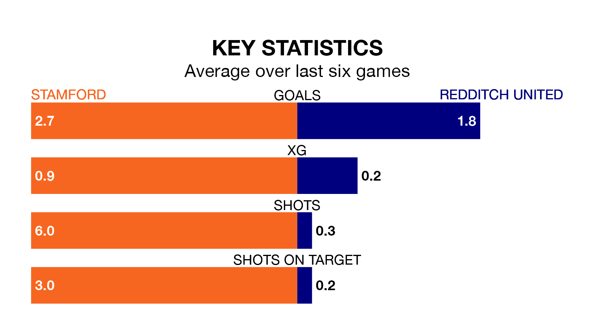

Redditch United travel to the Zeeco Stadium for Saturday's match against Stamford looking to bounce back from defeat last time out in Southern League Premier Central.
Redditch, who sit fourth in the league after 24 games, fell to a 4-2 home defeat to Coalville Town on January 6.
They face a Stamford side who also lost their last match, a 2-1 defeat to Stratford Town, and who sit seventh in the table.
With 50 goals in 24 games so far this season, Stamford are the league's third-highest scorers with 2.1 goals per game. But they are conceding more than average too, letting in 38 goals at a rate of 1.6 per game.
Redditch are also above average scorers, with 1.7 goals per game, compared to a league average of 1.5. They have conceded 1.4 goals per game.
The home side are in reasonable form in Southern League Premier Central, with three wins and two draws from their last six games.
With five wins and one loss over that period, United's form is better – they have taken 15 points from 18, compared to Stamford's 11.
Updated: 10:50, 10/01/24